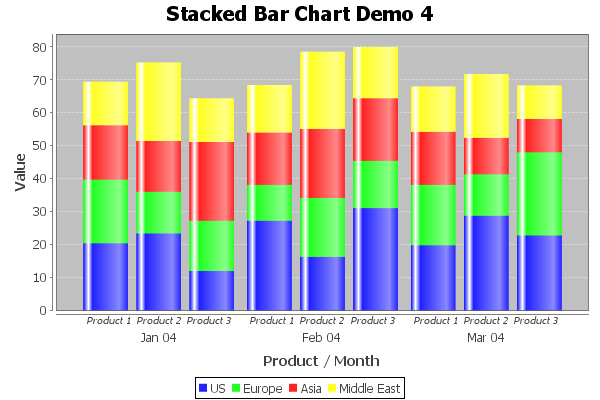
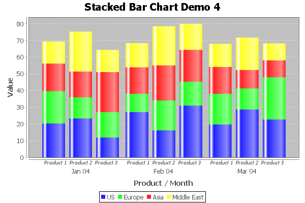

Class GroupedStackedBarRenderer
java.lang.Object
org.jfree.chart.renderer.AbstractRenderer
org.jfree.chart.renderer.category.AbstractCategoryItemRenderer
org.jfree.chart.renderer.category.BarRenderer
org.jfree.chart.renderer.category.StackedBarRenderer
org.jfree.chart.renderer.category.GroupedStackedBarRenderer
- All Implemented Interfaces:
Serializable,Cloneable,LegendItemSource,CategoryItemRenderer,org.jfree.util.PublicCloneable
public class GroupedStackedBarRenderer
extends StackedBarRenderer
implements Cloneable, org.jfree.util.PublicCloneable, Serializable
A renderer that draws stacked bars within groups. This will probably be
merged with the

StackedBarRenderer class at some point. The example
shown here is generated by the StackedBarChartDemo4.java
program included in the JFreeChart Demo Collection:

- See Also:
-
Field Summary
Fields inherited from class org.jfree.chart.renderer.category.BarRenderer
BAR_OUTLINE_WIDTH_THRESHOLD, DEFAULT_ITEM_MARGINFields inherited from class org.jfree.chart.renderer.AbstractRenderer
DEFAULT_OUTLINE_PAINT, DEFAULT_OUTLINE_STROKE, DEFAULT_PAINT, DEFAULT_SHAPE, DEFAULT_STROKE, DEFAULT_VALUE_LABEL_FONT, DEFAULT_VALUE_LABEL_PAINT, ZERO -
Constructor Summary
Constructors -
Method Summary
Modifier and TypeMethodDescriptionprotected doublecalculateBarW0(CategoryPlot plot, PlotOrientation orientation, Rectangle2D dataArea, CategoryAxis domainAxis, CategoryItemRendererState state, int row, int column) Calculates the coordinate of the first "side" of a bar.protected voidcalculateBarWidth(CategoryPlot plot, Rectangle2D dataArea, int rendererIndex, CategoryItemRendererState state) Calculates the bar width and stores it in the renderer state.voiddrawItem(Graphics2D g2, CategoryItemRendererState state, Rectangle2D dataArea, CategoryPlot plot, CategoryAxis domainAxis, ValueAxis rangeAxis, CategoryDataset dataset, int row, int column, int pass) Draws a stacked bar for a specific item.booleanTests this renderer for equality with an arbitrary object.findRangeBounds(CategoryDataset dataset) Returns the range of values the renderer requires to display all the items from the specified dataset.voidUpdates the map used to assign each series to a group, and sends aRendererChangeEventto all registered listeners.Methods inherited from class org.jfree.chart.renderer.category.StackedBarRenderer
getPassCount, getRenderAsPercentages, setRenderAsPercentagesMethods inherited from class org.jfree.chart.renderer.category.BarRenderer
calculateBarL0L1, calculateSeriesWidth, drawItemLabel, findRangeBounds, getBarPainter, getBase, getDefaultBarPainter, getDefaultShadowsVisible, getGradientPaintTransformer, getIncludeBaseInRange, getItemMargin, getLegendItem, getLowerClip, getMaximumBarWidth, getMinimumBarLength, getNegativeItemLabelPositionFallback, getPositiveItemLabelPositionFallback, getShadowPaint, getShadowsVisible, getShadowXOffset, getShadowYOffset, getUpperClip, initialise, isDrawBarOutline, setBarPainter, setBase, setDefaultBarPainter, setDefaultShadowsVisible, setDrawBarOutline, setGradientPaintTransformer, setIncludeBaseInRange, setItemMargin, setMaximumBarWidth, setMinimumBarLength, setNegativeItemLabelPositionFallback, setPositiveItemLabelPositionFallback, setShadowPaint, setShadowVisible, setShadowXOffset, setShadowYOffsetMethods inherited from class org.jfree.chart.renderer.category.AbstractCategoryItemRenderer
addEntity, addItemEntity, calculateDomainMarkerTextAnchorPoint, calculateRangeMarkerTextAnchorPoint, clone, createState, drawBackground, drawDomainGridline, drawDomainMarker, drawItemLabel, drawOutline, drawRangeGridline, drawRangeLine, drawRangeMarker, getBaseItemLabelGenerator, getBaseItemURLGenerator, getBaseToolTipGenerator, getColumnCount, getDomainAxis, getDrawingSupplier, getItemLabelGenerator, getItemMiddle, getItemURLGenerator, getLegendItemLabelGenerator, getLegendItems, getLegendItemToolTipGenerator, getLegendItemURLGenerator, getPlot, getRangeAxis, getRowCount, getSeriesItemLabelGenerator, getSeriesItemURLGenerator, getSeriesToolTipGenerator, getToolTipGenerator, getToolTipGenerator, hashCode, setBaseItemLabelGenerator, setBaseItemURLGenerator, setBaseToolTipGenerator, setItemLabelGenerator, setItemURLGenerator, setLegendItemLabelGenerator, setLegendItemToolTipGenerator, setLegendItemURLGenerator, setPlot, setSeriesItemLabelGenerator, setSeriesItemURLGenerator, setSeriesToolTipGenerator, setToolTipGenerator, updateCrosshairValuesMethods inherited from class org.jfree.chart.renderer.AbstractRenderer
addChangeListener, calculateLabelAnchorPoint, clearSeriesPaints, clearSeriesStrokes, fireChangeEvent, getAutoPopulateSeriesFillPaint, getAutoPopulateSeriesOutlinePaint, getAutoPopulateSeriesOutlineStroke, getAutoPopulateSeriesPaint, getAutoPopulateSeriesShape, getAutoPopulateSeriesStroke, getBaseCreateEntities, getBaseFillPaint, getBaseItemLabelFont, getBaseItemLabelPaint, getBaseItemLabelsVisible, getBaseLegendShape, getBaseLegendTextFont, getBaseLegendTextPaint, getBaseNegativeItemLabelPosition, getBaseOutlinePaint, getBaseOutlineStroke, getBasePaint, getBasePositiveItemLabelPosition, getBaseSeriesVisible, getBaseSeriesVisibleInLegend, getBaseShape, getBaseStroke, getCreateEntities, getDataBoundsIncludesVisibleSeriesOnly, getDefaultEntityRadius, getItemCreateEntity, getItemFillPaint, getItemLabelAnchorOffset, getItemLabelFont, getItemLabelFont, getItemLabelPaint, getItemLabelPaint, getItemOutlinePaint, getItemOutlineStroke, getItemPaint, getItemShape, getItemStroke, getItemVisible, getLegendShape, getLegendTextFont, getLegendTextPaint, getNegativeItemLabelPosition, getNegativeItemLabelPosition, getPositiveItemLabelPosition, getPositiveItemLabelPosition, getSeriesCreateEntities, getSeriesFillPaint, getSeriesItemLabelFont, getSeriesItemLabelPaint, getSeriesNegativeItemLabelPosition, getSeriesOutlinePaint, getSeriesOutlineStroke, getSeriesPaint, getSeriesPositiveItemLabelPosition, getSeriesShape, getSeriesStroke, getSeriesVisible, getSeriesVisible, getSeriesVisibleInLegend, getSeriesVisibleInLegend, getTreatLegendShapeAsLine, hasListener, isItemLabelVisible, isSeriesItemLabelsVisible, isSeriesVisible, isSeriesVisibleInLegend, lookupLegendShape, lookupLegendTextFont, lookupLegendTextPaint, lookupSeriesFillPaint, lookupSeriesOutlinePaint, lookupSeriesOutlineStroke, lookupSeriesPaint, lookupSeriesShape, lookupSeriesStroke, notifyListeners, removeChangeListener, setAutoPopulateSeriesFillPaint, setAutoPopulateSeriesOutlinePaint, setAutoPopulateSeriesOutlineStroke, setAutoPopulateSeriesPaint, setAutoPopulateSeriesShape, setAutoPopulateSeriesStroke, setBaseCreateEntities, setBaseCreateEntities, setBaseFillPaint, setBaseFillPaint, setBaseItemLabelFont, setBaseItemLabelFont, setBaseItemLabelPaint, setBaseItemLabelPaint, setBaseItemLabelsVisible, setBaseItemLabelsVisible, setBaseItemLabelsVisible, setBaseLegendShape, setBaseLegendTextFont, setBaseLegendTextPaint, setBaseNegativeItemLabelPosition, setBaseNegativeItemLabelPosition, setBaseOutlinePaint, setBaseOutlinePaint, setBaseOutlineStroke, setBaseOutlineStroke, setBasePaint, setBasePaint, setBasePositiveItemLabelPosition, setBasePositiveItemLabelPosition, setBaseSeriesVisible, setBaseSeriesVisible, setBaseSeriesVisibleInLegend, setBaseSeriesVisibleInLegend, setBaseShape, setBaseShape, setBaseStroke, setBaseStroke, setCreateEntities, setCreateEntities, setDataBoundsIncludesVisibleSeriesOnly, setDefaultEntityRadius, setFillPaint, setFillPaint, setItemLabelAnchorOffset, setItemLabelFont, setItemLabelFont, setItemLabelPaint, setItemLabelPaint, setItemLabelsVisible, setItemLabelsVisible, setItemLabelsVisible, setLegendShape, setLegendTextFont, setLegendTextPaint, setNegativeItemLabelPosition, setNegativeItemLabelPosition, setOutlinePaint, setOutlinePaint, setOutlineStroke, setOutlineStroke, setPaint, setPaint, setPositiveItemLabelPosition, setPositiveItemLabelPosition, setSeriesCreateEntities, setSeriesCreateEntities, setSeriesFillPaint, setSeriesFillPaint, setSeriesItemLabelFont, setSeriesItemLabelFont, setSeriesItemLabelPaint, setSeriesItemLabelPaint, setSeriesItemLabelsVisible, setSeriesItemLabelsVisible, setSeriesItemLabelsVisible, setSeriesNegativeItemLabelPosition, setSeriesNegativeItemLabelPosition, setSeriesOutlinePaint, setSeriesOutlinePaint, setSeriesOutlineStroke, setSeriesOutlineStroke, setSeriesPaint, setSeriesPaint, setSeriesPositiveItemLabelPosition, setSeriesPositiveItemLabelPosition, setSeriesShape, setSeriesShape, setSeriesStroke, setSeriesStroke, setSeriesVisible, setSeriesVisible, setSeriesVisible, setSeriesVisible, setSeriesVisibleInLegend, setSeriesVisibleInLegend, setSeriesVisibleInLegend, setSeriesVisibleInLegend, setShape, setShape, setStroke, setStroke, setTreatLegendShapeAsLineMethods inherited from class java.lang.Object
finalize, getClass, notify, notifyAll, toString, wait, wait, waitMethods inherited from interface org.jfree.chart.renderer.category.CategoryItemRenderer
addChangeListener, getBaseItemLabelFont, getBaseItemLabelPaint, getBaseItemLabelsVisible, getBaseNegativeItemLabelPosition, getBaseOutlinePaint, getBaseOutlineStroke, getBasePaint, getBasePositiveItemLabelPosition, getBaseSeriesVisible, getBaseSeriesVisibleInLegend, getBaseShape, getBaseStroke, getItemLabelFont, getItemLabelFont, getItemLabelPaint, getItemLabelPaint, getItemOutlinePaint, getItemOutlineStroke, getItemPaint, getItemShape, getItemStroke, getItemVisible, getNegativeItemLabelPosition, getNegativeItemLabelPosition, getPositiveItemLabelPosition, getPositiveItemLabelPosition, getSeriesItemLabelFont, getSeriesItemLabelPaint, getSeriesNegativeItemLabelPosition, getSeriesOutlinePaint, getSeriesOutlineStroke, getSeriesPaint, getSeriesPositiveItemLabelPosition, getSeriesShape, getSeriesStroke, getSeriesVisible, getSeriesVisible, getSeriesVisibleInLegend, getSeriesVisibleInLegend, isItemLabelVisible, isSeriesItemLabelsVisible, isSeriesVisible, isSeriesVisibleInLegend, removeChangeListener, setBaseItemLabelFont, setBaseItemLabelPaint, setBaseItemLabelsVisible, setBaseItemLabelsVisible, setBaseItemLabelsVisible, setBaseNegativeItemLabelPosition, setBaseNegativeItemLabelPosition, setBaseOutlinePaint, setBaseOutlineStroke, setBasePaint, setBasePositiveItemLabelPosition, setBasePositiveItemLabelPosition, setBaseSeriesVisible, setBaseSeriesVisible, setBaseSeriesVisibleInLegend, setBaseSeriesVisibleInLegend, setBaseShape, setBaseStroke, setItemLabelFont, setItemLabelPaint, setItemLabelsVisible, setItemLabelsVisible, setItemLabelsVisible, setNegativeItemLabelPosition, setNegativeItemLabelPosition, setOutlinePaint, setOutlineStroke, setPaint, setPositiveItemLabelPosition, setPositiveItemLabelPosition, setSeriesItemLabelFont, setSeriesItemLabelPaint, setSeriesItemLabelsVisible, setSeriesItemLabelsVisible, setSeriesItemLabelsVisible, setSeriesNegativeItemLabelPosition, setSeriesNegativeItemLabelPosition, setSeriesOutlinePaint, setSeriesOutlineStroke, setSeriesPaint, setSeriesPositiveItemLabelPosition, setSeriesPositiveItemLabelPosition, setSeriesShape, setSeriesStroke, setSeriesVisible, setSeriesVisible, setSeriesVisible, setSeriesVisible, setSeriesVisibleInLegend, setSeriesVisibleInLegend, setSeriesVisibleInLegend, setSeriesVisibleInLegend, setShape, setStrokeMethods inherited from interface org.jfree.util.PublicCloneable
clone
-
Constructor Details
-
GroupedStackedBarRenderer
public GroupedStackedBarRenderer()Creates a new renderer.
-
-
Method Details
-
setSeriesToGroupMap
Updates the map used to assign each series to a group, and sends aRendererChangeEventto all registered listeners.- Parameters:
map- the map (nullnot permitted).
-
findRangeBounds
Returns the range of values the renderer requires to display all the items from the specified dataset.- Specified by:
findRangeBoundsin interfaceCategoryItemRenderer- Overrides:
findRangeBoundsin classStackedBarRenderer- Parameters:
dataset- the dataset (nullpermitted).- Returns:
- The range (or
nullif the dataset isnullor empty).
-
calculateBarWidth
protected void calculateBarWidth(CategoryPlot plot, Rectangle2D dataArea, int rendererIndex, CategoryItemRendererState state) Calculates the bar width and stores it in the renderer state. We override the method in the base class to take account of the series-to-group mapping.- Overrides:
calculateBarWidthin classStackedBarRenderer- Parameters:
plot- the plot.dataArea- the data area.rendererIndex- the renderer index.state- the renderer state.
-
calculateBarW0
protected double calculateBarW0(CategoryPlot plot, PlotOrientation orientation, Rectangle2D dataArea, CategoryAxis domainAxis, CategoryItemRendererState state, int row, int column) Calculates the coordinate of the first "side" of a bar. This will be the minimum x-coordinate for a vertical bar, and the minimum y-coordinate for a horizontal bar.- Overrides:
calculateBarW0in classBarRenderer- Parameters:
plot- the plot.orientation- the plot orientation.dataArea- the data area.domainAxis- the domain axis.state- the renderer state (has the bar width precalculated).row- the row index.column- the column index.- Returns:
- The coordinate.
-
drawItem
public void drawItem(Graphics2D g2, CategoryItemRendererState state, Rectangle2D dataArea, CategoryPlot plot, CategoryAxis domainAxis, ValueAxis rangeAxis, CategoryDataset dataset, int row, int column, int pass) Draws a stacked bar for a specific item.- Specified by:
drawItemin interfaceCategoryItemRenderer- Overrides:
drawItemin classStackedBarRenderer- Parameters:
g2- the graphics device.state- the renderer state.dataArea- the plot area.plot- the plot.domainAxis- the domain (category) axis.rangeAxis- the range (value) axis.dataset- the data.row- the row index (zero-based).column- the column index (zero-based).pass- the pass index.
-
equals
Tests this renderer for equality with an arbitrary object.- Overrides:
equalsin classStackedBarRenderer- Parameters:
obj- the object (nullpermitted).- Returns:
- A boolean.
-